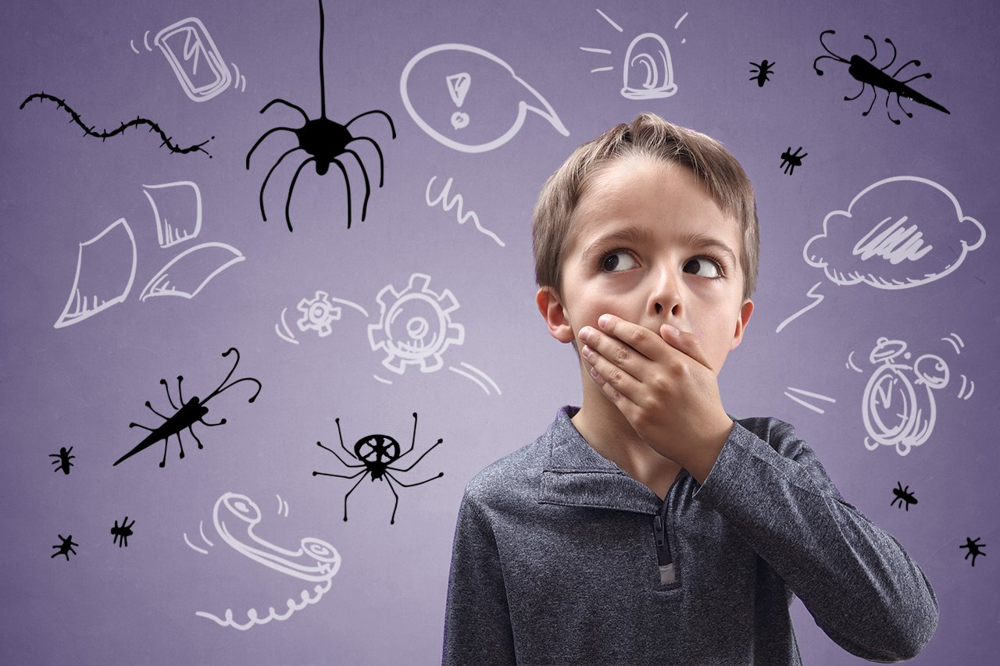

<!DOCTYPE html>
<html lang="ru">
<head>
    <meta charset="UTF-8">
    <title>Психология для студентов</title>
    <link rel="stylesheet" href="index.css">
</head>
<body>
    <aside id="sidebar">
        <div class="sidebar">
        <button class="menu-toggle" aria-label="Открыть меню">
            <span class="menu-icon">📋</span>
        </button>
        <nav id="chapter-menu">
            <h2><center>Содержание</center></h2>
        <ul>
            <li><a href="#introduction"><h2>Оглавление 📖</h2></a></li>
            <li><a href="#research"><h2>Исследование 🔎</h2></a></li>
            <li><a href="#articles"><h2>Статья 💻</h2></a></li>
            <li><a href="#interviews"><h2>Интервью 📸</h2></a></li>
            <li><a href="#reviews"><h2>Отзывы 📬</h2></a></li>
        </ul>
    </nav>
</aside>

    <div id="block"><h1>Поддержка cтудентов</h1></div><br>

        <div class="white-box">
            <section id="introduction">
                <h1>Оглавлениеи 📖</h1>
                <h3>Тревожность и психическое здоровье студентов:<br>
                    В современном мире, когда академические требования постоянно растут, а социальное давление усиливается, психическое здоровье студентов оказывается под угрозой. Тревожность, одно из самых распространенных психических расстройств, становится неотъемлемой частью студенческой жизни, влияя на успеваемость, личные отношения и общее благополучие. Понимание причин и факторов, способствующих развитию тревожности у студентов, является ключом к поиску эффективных решений и поддержке молодого поколения.<br>
                    <br><center>
                </h3>
            </div>
            </section>

            <div class="blue-box">
            <section id="research">
                <h1>Исследование 🔎</h1>
                <br> 
                    <h3><br>Методология исследования:<br>

                    <br>1.Количественный метод:<br>
                    
                    <br>Анкетирование: разработка и распространение анонимных онлайн-опросников среди студентов колледжа. Опросники будут содержать вопросы, касающиеся:<br>
                    1.Демографических данных (возраст, пол, курс, специальность).<br>
                    2.Уровня стресса (по шкале Лазаруса или аналогичной).<br>
                    2.Академической нагрузки и проблем (удовлетворенность обучением, чувство перегруженности).<br>
                    3.Финансовых трудностей (оценка материального положения и уровня беспокойства).<br>
                    4.Социальные взаимодействия (качество отношений с друзьями, одногруппниками, преподавателями; уровень социальной изоляции).<br>
                    5.Уровня поддержки (доступность консультационной помощи, учебной поддержки, эмоциональной поддержки со стороны семьи и друзей).<br>
                    6.Наличие симптомов депрессии, тревожности, выгорания (использование стандартизированных шкал, таких как PHQ-9, GAD-7).<br>
                    Статистический анализ: анализ данных с помощью статистических методов (корреляционный анализ, регрессионный анализ, дисперсионный анализ) для выявления взаимосвязей между факторами и психическим здоровьем.<br>
                    <br>2.Качественный метод:<br>

                    <br>Индивидуальные интервью: проведение полуструктурированных интервью с выбранными студентами для более глубокого изучения их опыта, переживаний и мнений о психическом здоровье. <br>Интервью будут посвящены:<br>
                    1.Конкретных стрессовых ситуациях и их влиянии на эмоциональное состояние.<br>
                    2.Особенностях социальных взаимодействий и их роли в жизни студентов.<br>
                    3.Опыте обращения за помощью и полученной поддержки.<br>
                    4.Предложениях по улучшению психического здоровья.<br>
                    <br>Фокус-группы: организация фокус-групп с участием разных категорий студентов (разных курсов, специальностей) для обсуждения общих проблем и обмена мнениями. <br>Фокус-группы позволят:<br>
                    1.Выявить общие тенденции и проблемы.<br>
                    2.Сгенерировать новые идеи и предложения.<br>
                    3.Получить более глубокое понимание социальных динамик, влияющих на психическое здоровье.<br>
                    <br>Факторы, влияющие на психическое здоровье (детальное рассмотрение):<br>

                    <br>1.Стрессовые ситуации:<br>

                    <br>Академический стресс:<br>
1.Перегрузка учебной работой, сжатые сроки, сложность материала.<br>
2.Экзаменационный стресс, страх неудачи, конкуренция.<br>
3.Проблемы с преподавателями, конфликты в учебных группах.<br>
4.Неопределенность в отношении будущей карьеры.<br>
<br>Финансовый стресс:<br>
1.Нехватка средств на оплату обучения, проживание и другие расходы.<br>
2.Беспокойство по поводу студенческих долгов.<br>
3.Необходимость совмещать учебу с работой.<br>
<br>Стресс, связанный с переходом:<br>
1.Адаптация к новой среде, отрыв от семьи и друзей.<br>
2.Трудности в формировании новых социальных связей.<br>
3.Изменение привычного образа жизни.<br>
<br>Личные проблемы:<br>
1.Проблемы в личных отношениях, расставания.<br>
2.Проблемы в семье, болезни близких.<br>
3.Проблемы со здоровьем (физическим и психическим).Социальные взаимодействия:<br>
<br>Стресс, связанный с будущим:<br>
1.Неопределенность в отношении будущего трудоустройства.<br>
2.Беспокойство по поводу карьерных перспектив.<br>

<br>2.Социальные взаимодействия:<br>

<br>Социальная поддержка:<br>
1.Наличие близких друзей, возможность делиться переживаниями и получать поддержку.<br>
2.Понимание и поддержка со стороны семьи.<br>
3.Отношения с преподавателями и наставниками.<br>
<br>Социальная изоляция:<br>
1.Отсутствие дружеских связей, чувство одиночества.<br>
2.Трудности в общении с другими студентами.<br>
3.Буллинг, травля, исключение из группы.<br>
<br>Социальное давление:<br>
1.Давление со стороны сверстников (употребление алкоголя, наркотиков, рискованное поведение).<br>
2.Сравнение себя с другими, чувство неполноценности.<br>
3.Давление соответствовать социальным ожиданиям.<br>
<br>3.Уровень поддержки:<br>

<br>Ресурсы колледжа:<br>
1.Доступность консультационной помощи и психологической поддержки.<br>
2.Наличие групп поддержки, тренингов по управлению стрессом.<br>
3.Учебная поддержка (репетиторы, консультации).<br>
4.Программы финансовой помощи, стипендии.<br>
5.Возможность обратиться за помощью к администрации колледжа.<br>
<br>Поддержка со стороны семьи и друзей:<br>
1.Эмоциональная поддержка, понимание, сочувствие.<br>
2.Практическая помощь в решении проблем.<br>
3.Поощрение, мотивация, вера в успех.<br>
<br>Самопомощь:<br>
1.Умение управлять стрессом, использовать стратегии совладания.<br>
2.Навыки планирования и организации времени.<br>
3.Забота о своём физическом и психическом здоровье (здоровый образ жизни, сон, отдых).<br>
<br>Рекомендации:<br>

1.Разработка программ по профилактике и снижению стресса.<br>
2.Улучшение доступности и качества консультационной помощи.<br>
3.Создание групп поддержки и тренингов по управлению стрессом.<br>
4.Усиление социальной поддержки студентов.<br>
5.Повышение осведомленности о психическом здоровье.<br>
6.Организация семинаров и мастер-классов по управлению временем и самопомощи.<br>

                </h3>
            </div>
            </section>

            <section id="articles">
                <div class="article-card">
                    <h1>Статья 💻</h1>
                    <br> 
                    <h3>Профилактика тревожности у студентов</h3>
                    <h3>Тревожность – это психическое состояние человека, связанное с переживанием надвигающихся или предполагаемых опасностей. В разной степени тревожность присутствует у каждого человека на планете. Повышенные или пониженные уровни тревожности могут негативно сказываться на психике человека. Проблему тревожности исследовали такие психологи как: З. Фрейд, А. Адлер, К. Хорни, Э. Фромм. У каждого из этих психологов были свои теории относительно тревожности. В этой статье мы рассмотрим проблемы, с которыми сталкиваются студенты с повышенным уровнем тревожности в процессе обучения в ВУЗах и как вести борьбу с этим психическим состоянием.<br>

                        <br>Студенческий период жизни является новым глотком жизни, более взрослой жизни. Смена окружения после школы, к которой уже привык, совершенно новые люди и требования. Всё это влияет на формирующуюся юношескую личность. Забот становится всё больше, а свободного времени всё меньше. Для людей с повышенной тревожностью всё это кажется настоящей катастрофой, из-за страхов перед новыми вызовами и неуверенностью в том, что с этим всем можно справиться. Все экзамены, зачёты, а иногда преподаватели становятся источниками, которые студент с выраженной тревожностью будет воспринимать, как таящие в себе угрозу и опасность.<br>
                        
                        <br>Большинство проведённых исследований на данный момент указывают на один вывод: наибольшее количество студентов с высоким уровнем тревожности обучаются на первом курсе. К примеру работа Евгения Андреевича Горшкова “По исследованию эмоциональной тревожности студентов на разных этапах обучения в педагогическом вузе”. Его исследование указывает на то, что у 35% исследуемых первокурсников наблюдалась повышенная тревожность. Обосновывается такой уровень тревожности у первокурсников тем, что студенты еще не свыклись с университетом, и не готовы к работе с такими обьёмами информации, к обучению, основанному на самообучении, не умеют правильно распределять свое время и слушать преподавателей.<br>
                        
                        <br>Из-за чего возникает состояние повышенной тревожности? На это есть множетсво причин. Особенности окружения (семья, друзья), меланхоличный темперамент, соматические заболевания, гормональный сбой, повышенная психоэмоциональная нагрузка, особенности и расстройства нервной системы, заболевания внутренних органов, вредные привычки. В большинстве случаев повышенная тревожность возникает в детском возрасте, а развиться может и вовсе спустя десятилетия.<br>
                        
                        <br>И хотя со временем большинство студентов привыкают к вузам, на последующих курсах еще остаются студенты, не поборовшие проблемы тревожности. Отмечается, что повышенный уровень тревоги без адекватного лечения приводит к серьезным расстройствам психики в дальнейшем, особенно у больных в особой группе риска. Формируется обсессивно-компульсивный невроз, многочисленные фобии, психиастеническая акцентуация характера. Помимо этого, постоянная тревожность и депрессии негативно влияют на функциональность пищеварительной системы.<br>

                        <br> 
                        
                        <br>Для профилактики тревожности принимаются следующие меры:<br>
                        
                        <br>Здоровый и полноценный сон. Этим пунктом некоторые студенты принебрегают, а некоторые просто неправльно распределяют свое время. Тем не менее сон – важная часть жизни человека и не стоит об этом забывать.<br>
                        
                        <br>Прогулки на свежем воздухе. Сами по себе полезны. Разгружают нервы и снижают уровень стресса.<br>
                        
                        <br>Отвлечься от проблем и заняться любимым делом/хобби. Этой мерой нужно пользоваться с умом, так как отвлекаться бывает полезно, чтобы не застрявать над чем-то на долгие часы, но всё же нужно не забывать о временных рамках. Лучше всего сделать себе расписание/график дня и выделять в нём время на развлечения.<br>
                        
                        <br>Занятия спортом/Физические нагрузки. Во время занятий происходит выброс адреналина, в следствие чего, реже возникает беспричинное расстройство.<br>
                        
                        <br>Занятия йогой/Медитация/Дыхательные упражнения. Расслябляют и успокаивают человека. Сюда же можно отнести и различные игрушки “антистресс”<br>
                        
                        <br>Обращение за помощью к квалифицированным специалистам.<br>
                
                        <br>Список литературы:<br>

                        <br>Горшков, Е. А. Исследование эмоциональной тревожности студентов на разных этапах обучения в педагогическом вузе /<br> Е. А. Горшков, Л. Д. Коротина. – Текст : непосредственный // Молодой ученый. – 2015. -№23.2 (103.2). – С. 46-51. – URL: https://moluch.ru/archive/103/24325/ (дата обращения: 10.02.2021).<br>
                        
                        <br>Чернышев В.П. Тревожность у студентов / В.П. Чернышев, Е.В. Тимошков // Современные вызовы образования и психология формирования личности : <br>монография (Чебоксары, 7 окт. 2020 г.) / гл. ред. Ж.В. Мурзина – Чебоксары: ИД “Среда”, 2020. – C. 139-150. – ISBN 978-5-907313-80-4.
                    </h3>
                                                                                                                                 
                </div>
            </section>

            <section id="interviews">
                <div class="interview-card">
                    <h1>Интервью с психологом 📸</h1>
                    <h3>Ролик был записан для помощи студентам в предэкзаменационный период. Однако, он полезен не только им. Советую к просмоору всем, кто интересуется темой стресса.</h3>
                    <h1><a href="https://youtu.be/YM5Wgz3VN-s">ВИДЕО</a></h1>
                </div>
            </section>

            <section id="reviews">
                <h1 class="B">Отзывы 📬</h1>
                <div id="review-list">
                   <!-- Сюда будут добавляться отзывы -->
                </div>

                <h3 сlass="N">Оставить отзыв</h3>
                <form id="review-form">
                    <input type="text" id="review-name" placeholder="Ваше имя">
                    <textarea id="review-text" placeholder="Ваш отзыв"></textarea>
                    <button type="submit">Отправить</button>
                </form>
            </section>
        </main>
    </div>
    <footer>
        <h3>&copy; 2025 Психологическая поддержка студентов</h3>
    </footer>

    <script src="index.js"></script>
</body>
</html>